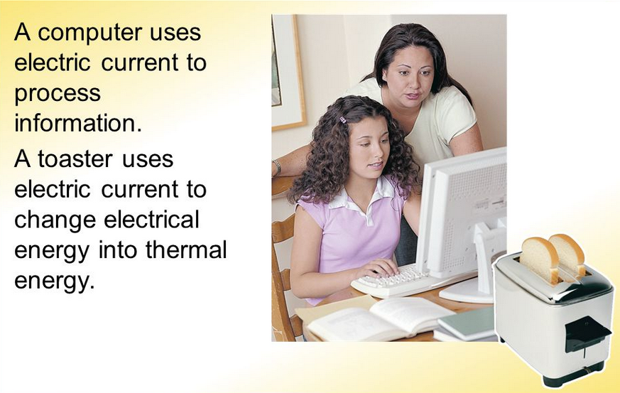
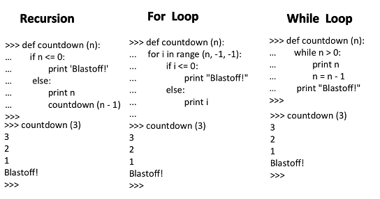

Notions that are Important
Telling Computers What to Do
Computers are Different
Machines are designed to do a few things like a toaster. Unless you physically alter these machines, they will only be able to do those things.Computers are different because they need instructions to tell it what to compute. Computers can be programmed to do anything we want, as long as we can write a program that specifies a specific sequence of instructions.
A PC vs a Toaster:

A Programming Language that has Grammar
A Programming Language is what programmers use to tell a computer what to do. Programing Languages have Grammar like Human Languages. A Grammar is a specification of what is "correct" and what is "incorrect." People can often understand sentences that are not technically "correct," but computers cannot because they are not smart enough. Therefore, you will have to write the Programing Language code with the "correct" Grammar according to the according to the Programing Language Syntax or it will no run in the Computer.
Instructions with a Computers Program
A Computer Program are steps and instructions that a Computer can follow. A web browser, a game and apps in a mobile phone are examples of computer programs or even the print statement in computer language like Python. Python is a programming language that uses a Python Interpreter that converts the code you wrote as set of step instruction that the Computer can understand and execute.
Programming Seriously with Python
What is a Variable in Python?
A Python "Variables" are nothing but reserved memory locations to store values. This means that when you create a variable you reserve some space in memory. Variables give programmers a way to give names to values. If my_variable is a variable with a value of 2, then the following code would print out 4: print my_variable + my_variable
Variable and different ways to assign values
We can assign the value 2 to the variable my_variable by writing code like this: my_variable = 2 In Python, 2 is a number while "2" is a string.The code 2 + 2 would give 4.The code "2" + "2" would give "22". We can even change the value of a variable by re-assigning it to a different value later. More Examples: the line 2 + 3 = 5, the equals sign means "is the same as". The plus + mean concatenate in other word in a chain together. A comma , means pairs. Square Brackets [ ] gives a location of a string character. Using the colon : on a square brackets it gives the start and end of a location. Using a location number position. Also called indexing. In the line my_variable = 5, the equals = sign means "takes the value".
Function also called a Procedure
A "Function" is a block of organized, reusable code that is used to perform a single, related action. Functions are made by starting a line of code with the keyword def and then giving a function name followed by the function parameters in parentheses ( ). parameters are what go inside the parentheses. Parameters are variables use in the function definitions that is a "handle" that allows the code in the function to access the arguments for a particular These parameters will eventually be replaced by actual values when the function is used (called).
Here is an example of a Function:

How do functions help to avoid repetition?
Functions are tools that programmers can create and reuse forever! Once you've defined a function once, you never have to define it again.
Loops & Recursion
You can tell a computer to repeat a bit of code between point A and point B, until the time comes that you need it to stop. Such a thing is called a Loop. There are two types of loops in Python, for and while. Recursion means; defining something in terms of itself, usually at some smaller scale, perhaps multiple times, to achieve your objective.
Recursion & Loops examples:
